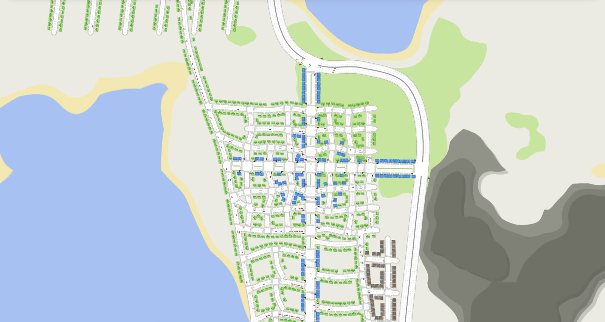

The Structorist
A cozy, minimal city builder for iPad, in development. Draw roads, zone neighborhoods and watch your town grow, one street at a time.

Roads that feel right
Freehand, straight and curved roads made of calm lines and real arcs, with snapping you can switch on and off.
A town that grows
Zone homes, shops and industry. Lots fill up as demand rises and people move in.
Traffic you can watch
Every car drives its own route, changes lanes, waits at stop lines and traffic lights.